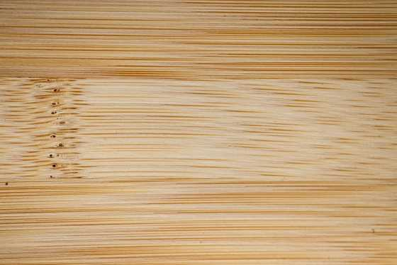

ベーカリー / 滋賀県
YAKUMEBAKERY
ベーカリー「YAKUME BAKERY」のご案内ページです。営業時間やメニューなど、詳しいことは準備中。まずはInstagramをのぞいてみてください。
図: ミキサー車の部位の配置図(制作側のイラスト)
制作側の連想
ミキサー車の部位を、配置図にしてみる
このサイトは、ミキサー車を横から見た図に六つの部位の番号をふったつもりで作りました。制作側の連想で、お店の理念・由来とは無関係です。実際の車両の仕様を示すものでもありません。
写真(イメージ)
ギャラリー その1


写真はフリー素材のイメージです。お店のものではなく、お店で提供している商品を示すものでもありません。
凡例
六つの部位
- 1ホッパードラムの後方上部にある、材料を受け入れるための投入口。
- 2ドラム傾けて載せた大きな円筒。回転して中身を混ぜ続ける部分。
- 3螺旋羽根ドラムの内側に取り付いた渦状の板。回す向きで混ぜたり、送り出したりする。
- 4排出シュートドラムの後端から出てきたものを、行き先へ導くとい状の部品。
- 5水タンク洗浄などに使う水を積んでおく、車体の下側のタンク。
- 6はしご車体の後方に付く、上り下りのためのはしご。
写真(イメージ)
ギャラリー その2



ご案内
お店のこと(確認できたものだけ)
| 所在地 | 〒529-1851 滋賀県甲賀市信楽町長野516-18 |
|---|---|
| 電話 | 準備中 |
| 営業時間 | 準備中 |
| 定休日 | 準備中 |
| ご予約 | 準備中 |
| 駐車場 | 準備中 |
| SNS | Instagram @yakumebakery |